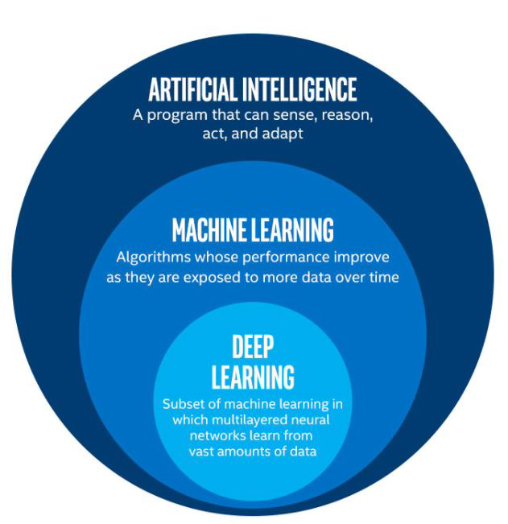
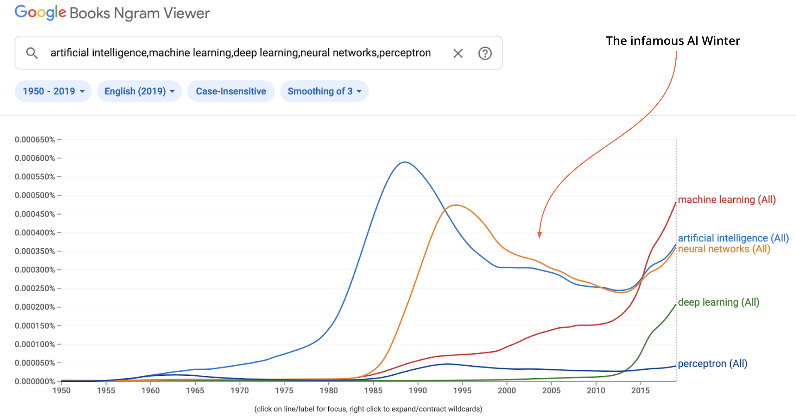
When and Why?#
non-linearity
many dimensions
…
When and why?#
Non linear hypotheses
Assuming this data: to this dataset you could apply logistic regression with a lot of nonlinear features including lots of polynomials
For 100 features, including the second order polynomials you get about 5000 features ~ \(O(n^2)\) features
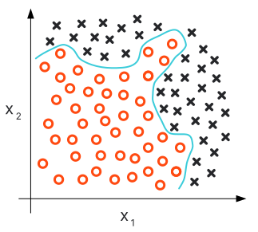
When and why?#
Non linear hypotheses
Assuming this data: to this dataset you could apply logistic regression with a lot of nonlinear features including lots of polynomials
For 100 features, including the second order polynomials you get about 5000 features ~ \(O(n^2)\) features
risk of overfitting
computationally expensive
picking a subset of features can lead to simpler decision boundaries
When and why?#
Many Dimensions
So.. let’s look at a picture of cats
1200 x 1200 pixels
50 x 50 pixels
n = 2500 pixels so 7500 in RGB
~3 million quadratic features in grey scale .. 9 million in RGB
Big picture: what is a neural network?#
A system that learns patterns from past examples to make predictions.
PM analogy:
Like a delivery organisation learning from hundreds of past projects.
Inputs → Analysis → Decision
The Neuron#
How it started#
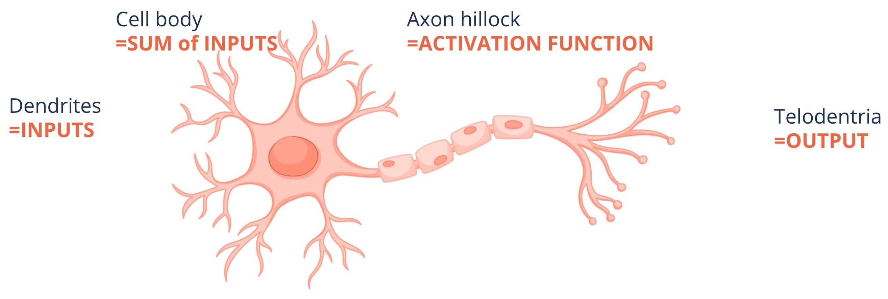
“one learning algorithm” hypothesis - plug in any sensor and given enough time the brain will learn to deal with it
What is a neuron?#
A neuron is a tiny decision contributor.
It:
Receives inputs
Weighs importance
Produces an output
x1 ──▶( )
x2 ──▶( )──▶ output
x3 ──▶( )
A different neuron: the Perceptron#
Input and output are numbers
Each input is associated with a weight
Example step function:
\( s t e p(z)=h e a v i s i d e(z)=\left\{\!\!\begin{array}{c c}{{0}}&{{z<0}}\\ {{1}}&{{z\ge0}}\end{array}\right.\)
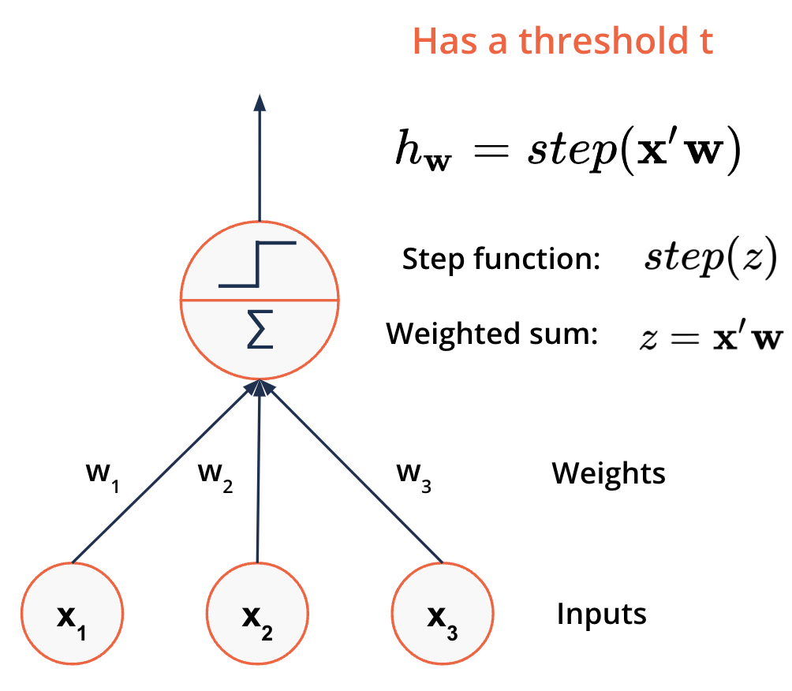
Rosenblatt, F. (1958), “The Perceptron: A Probabilistic Model for Information Storage and Organization in the Brain”
The perceptron (single neuron)#
One neuron
One decision
Inputs → [ Perceptron ] → Yes / No
PM analogy: a single approval gate.
Activation Function#
In the first Perceptron a step-function was used.
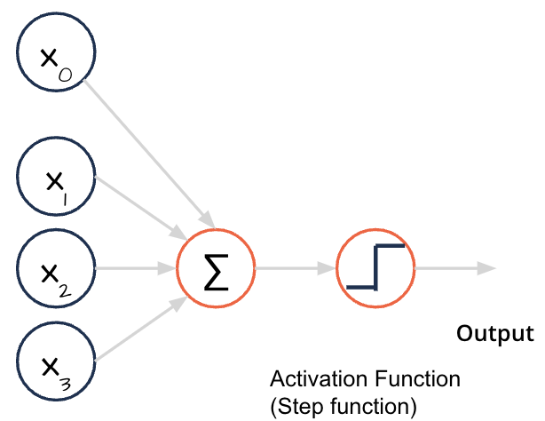
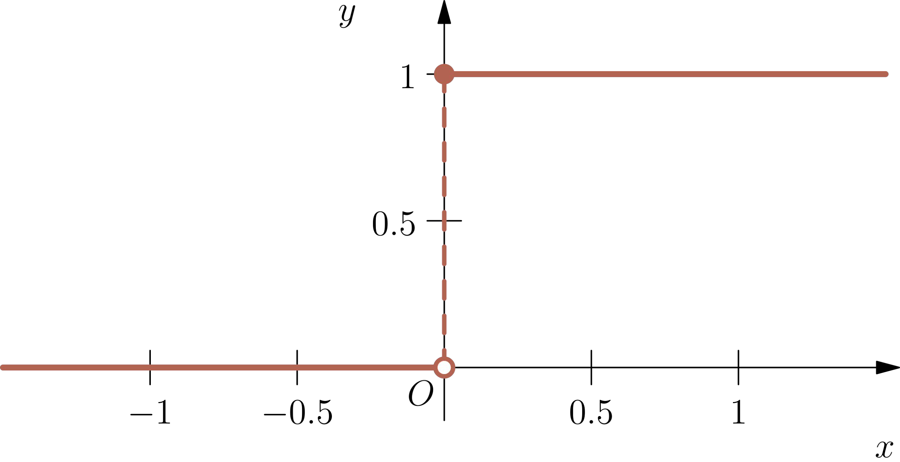
Activation functions (decision style)#
Binary: approve / reject
Gradual: low → medium → high risk
Threshold-based escalation
They control behaviour, not intelligence.
The XOR problem - the end of the Perceptron#
Exclusive OR: (\(x_1\) OR \(x_2\) are 1 but never both)
Perceptron fails at this simple problem
One of the reasons for the first AI Winter (1973)
The XOR problem - the end of the Perceptron#
Exclusive OR: (\(x_1\) OR \(x_2\) are 1 but never both)
Perceptron fails at this simple problem
One of the reasons for the first AI Winter (1973)
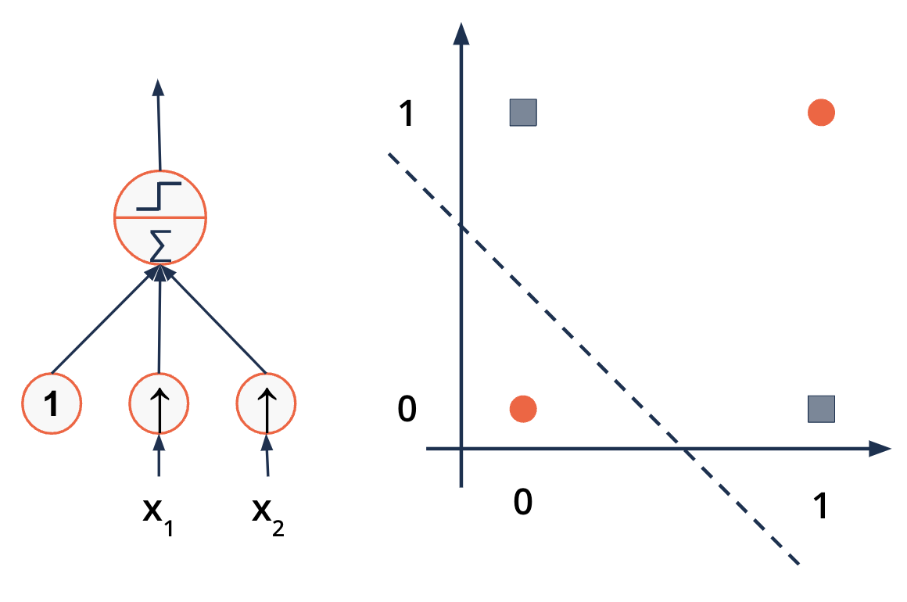
x1 |
x2 |
Output |
|---|---|---|
0 |
0 |
0 |
0 |
1 |
1 |
1 |
0 |
1 |
1 |
1 |
1 |
The XOR problem (why simple rules fail)#
Some problems cannot be solved by one rule.
A B Risk
0 0 0
1 0 1
0 1 1
1 1 0
Interactions matter in real projects.
Logical computations and neurons#
More than one possible outcome - more Perceptrons
Here: three possible outcomes
Described as a {fully connected layer} or {dense layer}
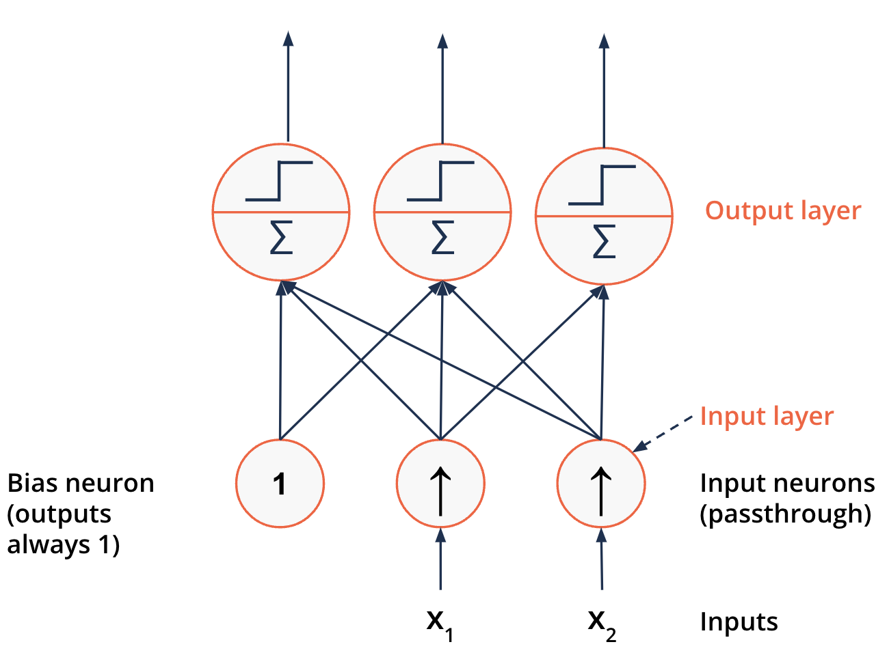
Logical computations and neurons#
The XOR problem - the end of the Perceptron
Two Lines are needed to separate the classes
Two Perceptrons could solve this
But two binary outputs
Two outputs with three combinations: [00, 10, 11]
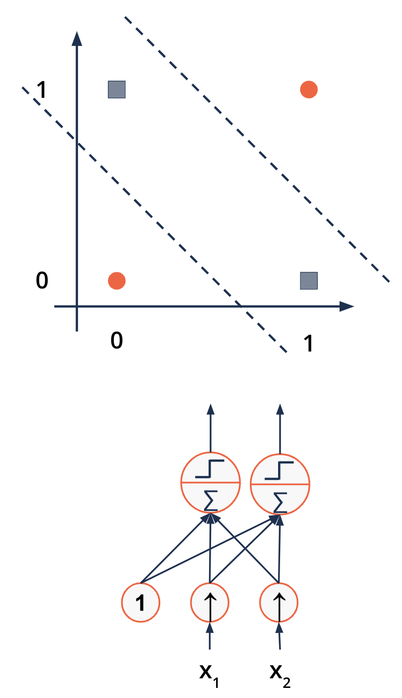
Minsky, M. and Papert, S. (1969): “Perceptrons: An Introduction to Computational Geometry”
Logical computations and neurons#
The XOR problem - a multilayer problem
Adding a second layer solves the XOR problem
Multilayer Perceptron (MLP)
Breaks problem into sub-problems
Solves sub-problems
Combines results
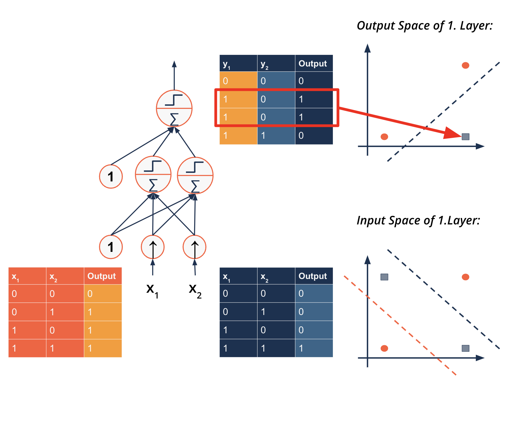
Weights and bias (PM intuition)#
Weights = learned importance
Regulatory risk > optimism
Evidence > gut feel
Bias = baseline assumption
“Projects usually trend late unless acted on”
The Neural Network#
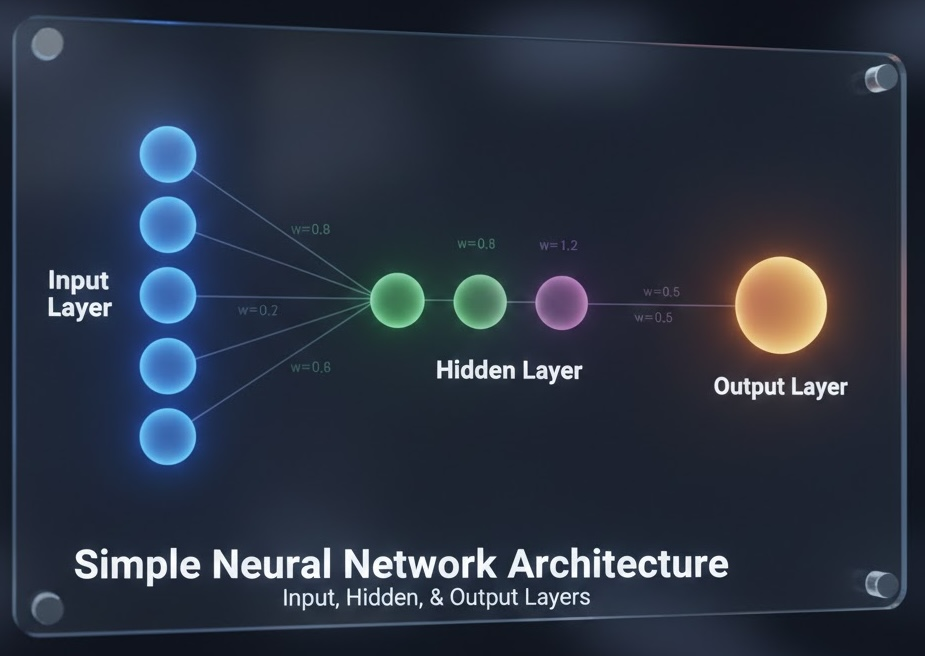
Deep Neural Networks and compact representations#
What Network architecture can solve the Parity function:
Here for D=4:
Deep Neural Network with a single hidden layer: 55 neurons required to solve the problem
Deep Neural Network with D=4 hidden layers: 16 neurons required to solve the problem (much more compact as size is linear)
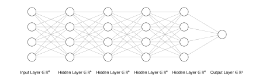
Deep learning and parameter search#
Deep Neural Networks
Deep neural networks
At least one hidden layer
Can theoretically approximate any function
Universal Approximation Theorem (Hornik (1991))
With arbitrary activation functions
Even with only a single hidden layer
Then why deeper?
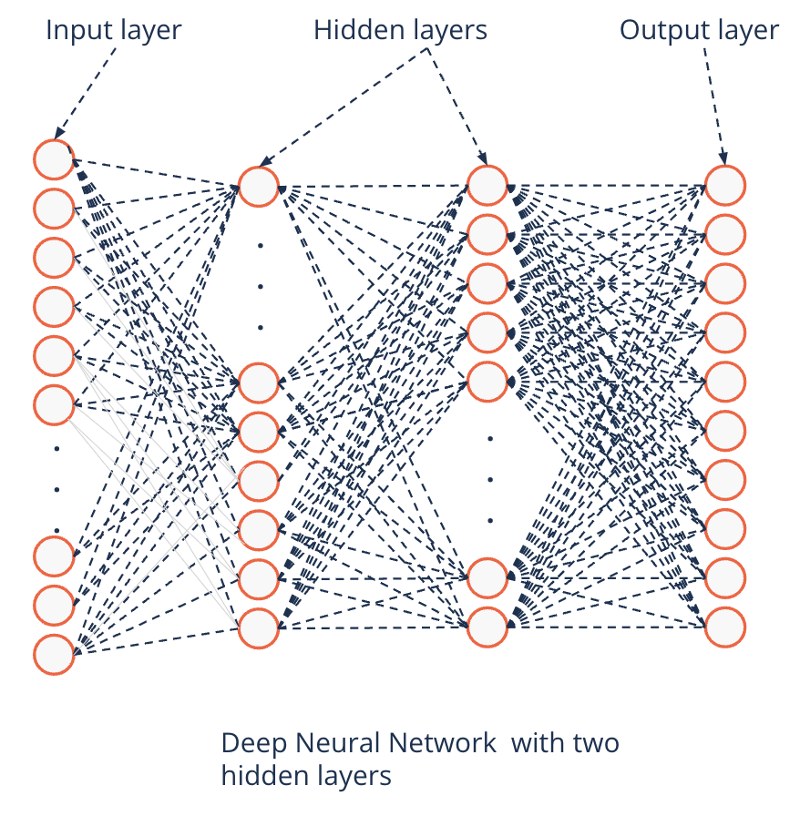
Cybenko, G. (1989), “Approximation by Superpositions of a Sigmoidal Function”
Hornik, K. (1991), “Approximation Capabilities of Multilayer Feedforward Networks”
Csáji, B.C., (2001), “Approximation with Artificial Neural Networks”
Training the network#
Deep learning and parameter search#
How to find the parameters?
First intuition: Gradient descent
But how to apply the algorithm with many coupled and nested functions?
Backpropagation was a breakthrough in research
Makes training of very deep networks possible
Error is backpropagated through a network (End to Begin)
Gradient is calculated step-wise
Problem: Gradient of the step function is almost always zero
What now?
Werbos, P.J. (1974), “Beyond Regression: New Tools For Prediction And Analysis In The Behavioral Sciences”
Linnainmaa, S. (1970), “The representation of the cumulative rounding error of an algorithm as a Taylor expansion of the local rounding errors”
Rumelhart, D., Hinton, G. and Williams, R. (1986), “Learning Internal Representations by Error Propagation”
Non-linear activation functions#
Make Backpropagation possible
Gradient at almost any point in space
Most common activation functions are
Sigmoid \(\hspace{0.5cm} \sigma(z) = \frac{1}{1+\exp{(-z)}}\)
Tanh \(\hspace{0.5cm} \tanh(z) = \frac{\exp{(z)} - \exp{(-z)}}{\exp{(z)}+ \exp{(-z)}}\)
ReLU (Rectified Linear Unit) \(\hspace{0.5cm} ReLU(z) = \max(0,z)\)
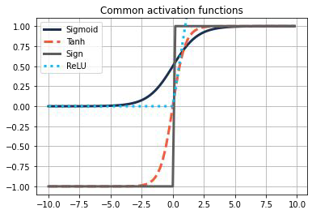
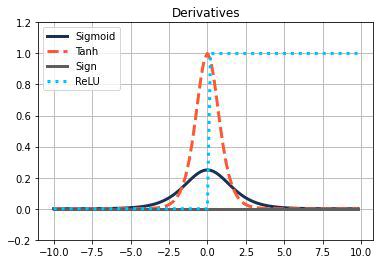
Non-linear activation functions#
Non-linear activation functions are needed to model more interesting output function
Linear activation functions give linear models
Linear activation functions can be used in Regression problems
Hidden layers should be non-linear nevertheless
Hidden layers with linear activation functions and a sigmoid output:
Logistic regression
Learning & backpropagation#
Predict → Compare → Adjust → Repeat
PM analogy:
Post-implementation review
Root cause analysis
Adjust future decisions
Training deep neural networks#
- Backpropagation enabled researchers to train neural networks in a single algorithm
- Before layerwise training had been used
- However, networks with a large number of layers still had problems
- Vanishing/exploding gradients
Frameworks#
Python deep learning libraries - Deep learning frameworks#
- There exist a couple of major deep learning libraries
- TensorFlow is the one most used in production
- Since TensorFlow version 2.0 Keras is part of TensorFlow
- Keras is an high-level API to TensorFlow
- Abstracts away a lot of complexity in coding
- Ease the building and training of models by
- modules for layers, optimizers and activation functions
- parallelized training processes
Python deep learning libraries - TensorBoard - TensorFlow visualization#
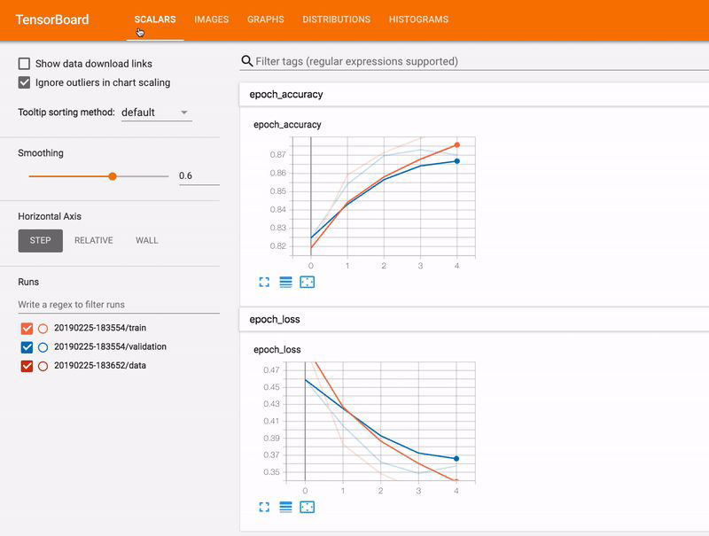
Hyperparameters#
Hyperparameters#
- What hyperparameters exist?
- Learning rate - very important
- Number of layers - not so much
- Number of neurons per layer - important
- Number of features - important
- Mini-batch size - important
- Optimization algorithm - important
- Learning rate decay - not so much
- How to tune them?
- Try random values - do not use a grid!
Search Strategies#
- Hyperparameter search in neural networks underlies curse of dimensionality
- Many parameters to tune
- Unknown which are the important ones for the problem
Search Strategies#
- Hyperparameter search in neural networks underlies curse of dimensionality
- Many parameters to tune
- Unknown which are the important ones for the problem
- Usually it is used an approach based on
- Random search
- Coarse-to-fine
- Well-scaled (often log-scaled)
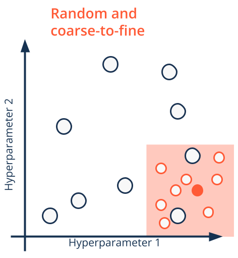
Regularization#
Regularization techniques in deep learning - Dropout#
- Dropout is a very powerful regularization method for neural
networks
- Randomly eliminate nodes in each optimization step
- Dropout prevents units from co-adapting
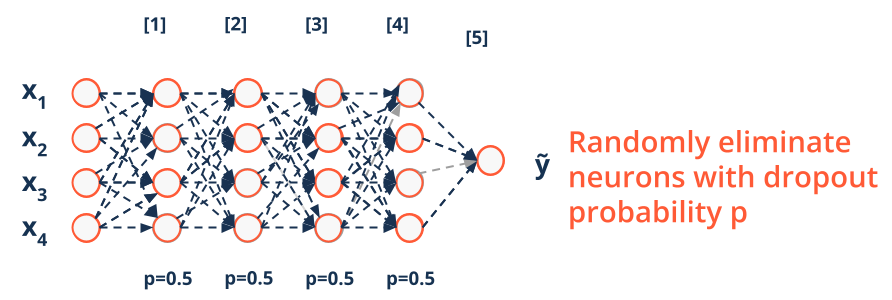
Srivastava et al. (2014), “Dropout: A Simple Way to Prevent Neural Networks from Overfitting”
Regularization techniques in deep learning - Intuitive explanation to neural co-adapting#
- A single neuron relies on the input of its predecessor neurons
- Bears the risk of relying on a few predecessors that activate on noise
- Dropping neurons randomly then forces the neuron to diversify
- Each predecessor signal could vanish with dropout
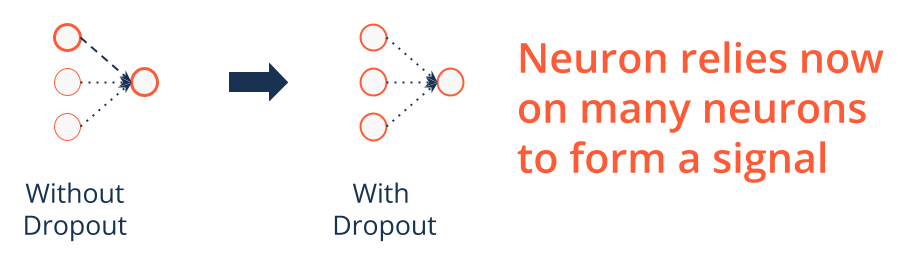
Regularization techniques in deep learning - Dropout mimics ensembling#
- Instead of testing many different networks by training each of them in isolation
- Dropout tests them during a single optimization
- Predictions are approximating the average over all thinned networks
- This is similar to ensemble learners
- In contrast to ensembles effect is reached by using unthinned network with smaller weights
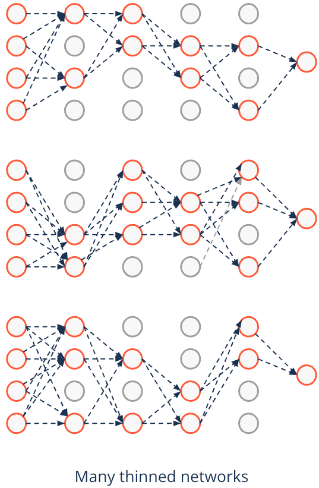
Regularization techniques in deep learning - Dropout mimics ensembling#
- Instead of testing many different networks by training each of them in isolation
- Dropout tests them during a single optimization
- Predictions are approximating the average over all thinned networks
- This is similar to ensemble learners
- In contrast to ensembles effect is reached by using unthinned network with smaller weights
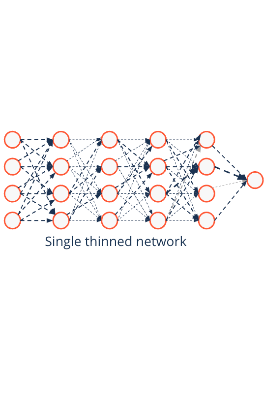
Regularization techniques in deep learning - Early stopping can be resourceful#
- Early stopping is used to find the optimal point
- Validation error raises again
- Builds on the development of weights during training
- Weights start small and increase
- Not the best method to regularize
- Orthogonalization of optimizing and regularizing gets lost
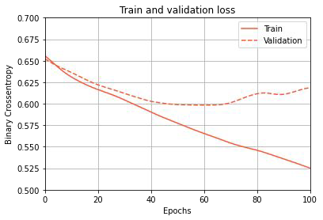
Wang et al. (1994), “Optimal Stopping and Effective Machine Complexity in Learning” Caruana et al. (2001), “Overfitting in Neural Nets: Backpropagation, Conjugate Gradient, and Early Stopping”
Frameworks#
Python deep learning libraries - Deep learning frameworks#
- There exist a couple of major deep learning libraries
- TensorFlow is the one most used in production
- Since TensorFlow version 2.0 Keras is part of TensorFlow
- Keras is an high-level API to TensorFlow
- Abstracts away a lot of complexity in coding
- Ease the building and training of models by
- modules for layers, optimizers and activation functions
- parallelized training processes
Python deep learning libraries - TensorBoard - TensorFlow visualization#
Case study: Schedule risk#
Inputs:
Early variance
Supplier performance
Team churn
Output: Probability of delay
Value: Earlier escalation, objective triggers
Case study: Cost overrun#
Inputs:
Burn rate trends
Scope volatility
Contract type
Outcome: Reduced optimism bias
Case study: Benefits realisation#
Inputs:
Adoption metrics
Change saturation
Capability maturity
Used for: Targeted change investment
AI governance & assurance#
Accountability: Human decision ownership
Transparency: Data sources & limits documented
Validation: Tested against real outcomes
Ethics: Bias and impact monitoring
PMs define acceptable use.
Why project managers should care#
Neural networks help with:
Cost and schedule forecasting
Early risk detection
Pattern recognition at scale
They support decisions — they do not replace accountability.
References#
Rosenblatt, F. (1958), “The Perceptron: A Probabilistic Model for Information Storage and Organization in the Brain”
Minsky, M. and Papert, S. (1969): “Perceptrons: An Introduction to Computational Geometry”
Lighthill, J. (1972), “Artificial Intelligence: A General Survey”
https://cs231n.github.io (stanford course notes)